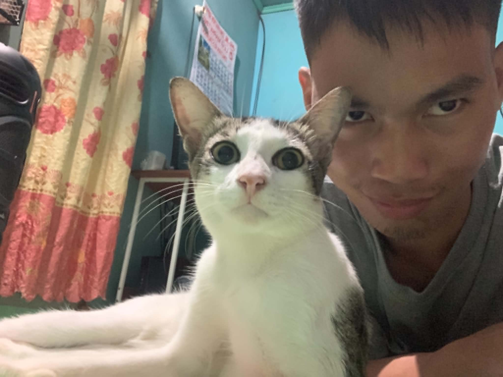

Emerging EdTech Specialist Portfolio
Andre S. Jumalon
E-Portfolio 2k26 | Computer Systems Servicing NC II
Comprehensive ICT Integration E-Portfolio
Summative Activity 01 | BTVTEd-CSS 1 | Andre S Jumalon
TO: School Head / ICT Coordinator
FROM: ANDRE S. JUMALON, BTVTEd CSS 1
DATE: May 21, 2026
SUBJECT: ICT Policy Analysis & Classroom Implementation Recommendations
Purpose & Scope
Policy Gaps Analysis
| Policy / Guideline | Key Requirement | Implementation Gap |
|---|---|---|
| DepEd Order No. 42, s. 2017 (PPST) | Teachers must integrate ICT to enhance learning outcomes and develop digital literacy. | Limited access to updated hardware and simulation tools; teachers lack structured training on ICT integration for CSS. |
| TESDA CSS NCII Competency Standards | Hands-on assembly/disassembly, network configuration, and safety procedures must be practiced. | Insufficient lab equipment per student ratio; no offline-ready modules for students with poor internet connectivity. |
Actionable Classroom Behaviors
| Guideline (Numbered List + Icons) | Aligned Policy | Addresses This Gap (from Section 2) |
|---|---|---|
| 1️⃣ Implement Offline CSS Lab Kits | TESDA CSS NCII & DepEd Commons | Bridges the lack of reliable internet and ensures continuous hands-on practice. |
| 2️⃣ Rotational Peer-Teaching on Assembly | PPST Strand 3.4 (Learner-Centered Strategies) | Maximizes limited hardware by allowing every student to observe, assist, and reflect. |
| 3️⃣ Simulation-Based Pre-Assembly Drills | DepEd ICT Integration Framework | Reduces risk of hardware damage and prepares students with virtual troubleshooting experience. |
Roles & Monitoring Plan
| Guideline # | Who is Responsible | Monitoring Suggestion |
|---|---|---|
| 1️⃣ Offline CSS Lab Kits | ICT Coordinator & CSS Master Teacher | Monthly inventory check; student feedback forms on module usability. |
| 2️⃣ Rotational Peer-Teaching | Classroom CSS Instructor & Student Leaders | Observation checklist; peer evaluation rubric every 2 weeks. |
| 3️⃣ Simulation-Based Drills | ICT Lab Technician & Subject Teacher | Track completion rates in Packet Tracer; weekly log of virtual lab performance. |
Reflective Annotation
This policy analysis revealed that as a future TVET educator, I am not just a technician but a learning architect. I must design inclusive experiences that bridge infrastructure gaps — using offline resources, peer collaboration, and simulation tools. The gaps identified pushed me to think beyond ideal settings and create adaptable, resilient instruction. My role is to ensure that every student, regardless of connectivity or hardware access, can master CSS competencies safely and confidently.
Toolkit for Pedagogically-Aligned Technology Integration
Curated digital tools • Learning theories • Accessibility in video format
Constructivism + Experiential Learning (Kolb)
Technology / Computer Systems Servicing (CSS NCII)
Allows students to design, configure, and troubleshoot networks without physical hardware. Bridges theory and practice, reduces lab costs, and supports self-paced exploration.
Discovery Learning (Bruner)
Technology / Operating Systems / CSS
Enables safe sandboxed environment for OS installation, partitioning, and troubleshooting. Fosters experimentation without damaging host hardware.
Connectivism (Siemens)
Cross-curricular (Technology, English, Math, TLE, Science)
Free, localized, offline-capable platforms aligned with DepEd/TESDA competencies. Promotes equity and continuous learning beyond classroom walls.
Collaborative Learning + Flipped Classroom
All subjects (P.E., English, Math, Science, Technology, Social Studies, Arts)
Streamlines assignment distribution, feedback loops, and parent communication. Supports differentiated instruction and real-time collaboration.
Universal Design for Learning (UDL)
All subjects (Visual Arts, English, Social Studies, Technology, Math, Science)
Empowers students to create infographics, presentations, and posters. Low floor, high ceiling – supports diverse learners and creative expression.
Transactional Distance Theory (Moore)
All subjects (especially CSS, remote learning, and low-connectivity contexts)
Provides downloadable modules, USB-based video tutorials, and offline LMS access. Ensures continuity for students with limited or no internet.
Synthesis: Patterns Across These Tools
These six tools collectively demonstrate that effective technology integration rests on three pillars: active construction of knowledge (Packet Tracer, VirtualBox), collaborative and connected learning (Google Classroom, DepEd Commons), and universal design for inclusion (Canva, Offline-first resources). Each tool prioritizes learner agency, offering multiple entry points and modalities. They also share a commitment to accessibility — from screen readers to offline modes — ensuring that students regardless of connectivity or ability can participate. Together, they foster inclusive, active learning by moving beyond passive content consumption toward creation, simulation, and real-world problem solving. This toolkit equips educators to design resilient, learner-centered environments that honor diversity and equity.
📝 My Ethical Compass: Technology for Inclusive, Quality Education
"Computer Systems Servicing (CSS) plays an important role in understanding how computer systems work, are assembled, and maintained. As a learner, I see CSS not only as a technical subject but also as a foundation for developing digital literacy and responsible use of technology. It teaches practical skills such as troubleshooting hardware and software, which are essential in today's technology-driven world. Based on the idea that technology is a powerful tool in modern education, CSS shows how computers and digital systems can support learning when used properly. However, technology should not replace meaningful instruction or human guidance. Instead, it should enhance learning through hands-on experiences, interactive activities, and real-world applications. In CSS, this is reflected when students are given opportunities to physically assemble and disassemble computer systems, allowing deeper understanding rather than just theoretical knowledge. One of the most important issues connected to CSS and ICT education is the digital divide. Not all learners have equal access to computers, tools, or stable internet connections. This reminds me that learning CSS must be inclusive. Teachers and institutions should provide alternative activities such as simulations, offline modules, or group-based tasks so that no learner is left behind. Education should always prioritize fairness and accessibility. Another important lesson from CSS is the ethical use of technology. As students learn how systems work, they also become more aware of how technology affects society. Issues like cyberbullying, misinformation, and improper use of digital tools highlight the need for digital citizenship. In CSS, learners should not only develop technical skills but also learn responsibility in using technology safely and respectfully. Overall, Computer Systems Servicing is more than just a technical subject—it is a pathway to understanding how technology shapes education and society. My reflection is that ICT and CSS should always be guided by ethics, inclusivity, and responsibility. Technology should serve as a bridge to better learning opportunities, not a barrier. As a learner, I believe that developing both technical skills and ethical awareness is essential in becoming a responsible user and future professional in the field of technology."
— Andre S Jumalon, First Year · BTVTEd-CSS-1
How I've Grown (So Far!)
✅ Learned that ICT policy matters — it affects which tools students get.
✅ Discovered free simulation tools that can replace expensive lab equipment.
✅ Realized that teaching CSS is about building confidence, not just technical skills.
✅ Started thinking like a future educator — not just a student.
Where I'm Headed Next
🚀 I want to build an offline CSS lab kit for rural schools.
🎓 Get certified in Cisco NetAcad and Google for Education.
🤝 Volunteer as a student tech mentor in my community.
📖 Keep learning and sharing my EdTech discoveries!
Lesson Plan No. 1: Computer Assembly & Disassembly
Learning Area: ICT-CSS | Quarter: Third Quarter | Grade Level: Non-Graded (TVET) | Duration: 1 Hour
Competency Code: TLE_IACSS9-12ICCS-Ia-e-28 — Assemble computer hardware
Content Standard
Demonstrates understanding of computer hardware components and the correct procedures in assembling and disassembling computer systems.
Performance Standard
Perform computer assembly and disassembly correctly and safely following standard procedures.
Learning Objectives
- 1. Identify basic tools used in computer assembly.
- 2. Demonstrate proper assembly/disassembly steps.
- 3. Apply safety precautions while handling hardware.
Key Concept
Computer assembly/disassembly are essential skills involving correct installation, removal, and safety procedures.
Basic Tools Needed
Safety Precautions
Learning Procedures
🎮 Interactive Quiz: Test Your Knowledge!
Agreement / Assignment
- 1. List step-by-step assembly/disassembly procedure.
- 2. Give three common computer problems + solutions.
- 3. Explain importance of proper handling (3-5 sentences).
Integration & Resources
References: DepEd CSS CG | Resources: Pictures, Activity sheets, Video
Prepared by: ANDRE S JUMALON | Future LPT
🌟 Thank You for Visiting My Portfolio!
Andre S Jumalon · BTVTEd-CSS · First Year

Andre S. Jumalon
Get in Touch
Feel free to reach out for collaborations, questions, or just to connect!
📧 acsjumalon01202501831@usep.edu.phlinkedin.com/in/andre-jumalon
Mockup Profile • Click to view demo
Connect with me on LinkedIn
This e-portfolio is my big project as a BTVTEd-CSS student. It shows how much I've grown already. I'm excited to keep learning, building, and one day becoming a TVET teacher who makes tech fun and accessible for everyone.
Last Updated: May 2026
References
📚 Learning Theories & Models
- Bruner, J. (1961). The discovery learning model. In eLearning Industry. (2014, October 8). Instructional design models and theories: The discovery learning model. Retrieved from https://elearningindustry.com/discovery-learning-model
- CAST. (2018). Universal Design for Learning guidelines version 2.2. Retrieved from https://udlguidelines.cast.org
- Moore, M. G. (1993). Transactional distance theory. In Distance Education Theory.
- Siemens, G. (2005). Connectivism: A learning theory for the digital age. International Journal of Instructional Technology and Distance Learning, 2(1), 3-10.
📖 Pedagogical Approaches
- Akçayır, G., & Akçayır, M. (2018). The flipped classroom: A review of its advantages and challenges. Computers & Education, 126, 334-345.
- FeedbackFruits. (2022, March 28). What is flipped classroom and how to best optimize this approach in online settings.
- Western Governors University. (2021, May 27). Connectivism learning theory.
🎥 Video Resources
- Teachings in Education. (2018, June 10). Universal Design for Learning (UDL) [Video]. YouTube.
- Computer Assembly and Disassembly Tutorial [Video]. YouTube.
📄 Policy & Government Resources
- Department of Education. (2019). Computer Systems Servicing NC II Curriculum Guide.
- DepEd Commons. (2022). Open Educational Resources for distance learning. Manila: Department of Education.
- TESDA. (2023). CSS NC II competency standards. Taguig: Technical Education and Skills Development Authority.